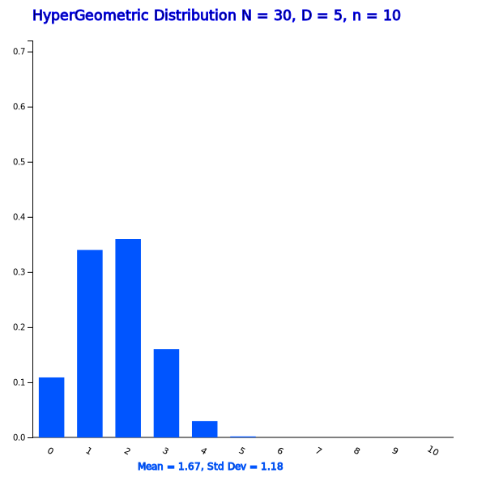
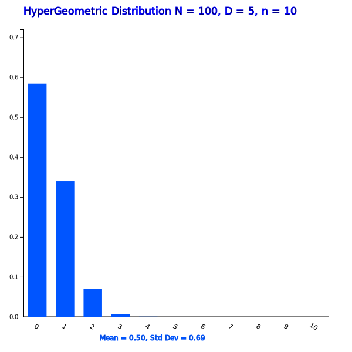
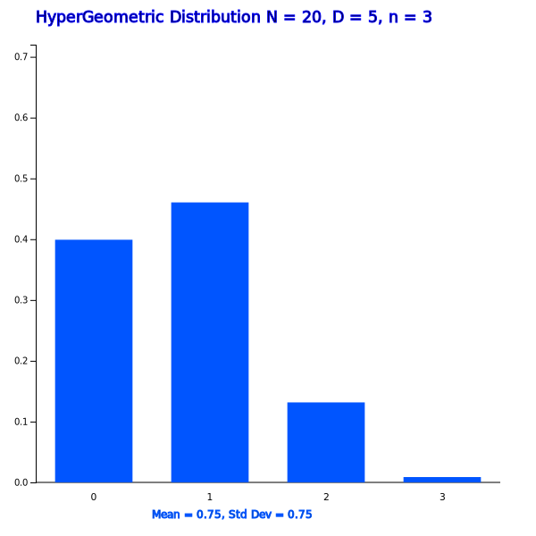

Chapter 5. Probability Distribution
5.3.4 Hypergeometric Distribution
[presentation] [video]
$$ \frac { { }_{15} C_2 \times {}_{5} C_1 } { {}_{20} C_3 } $$
Consider a population of size \(N\) which consists of \(D\) ‘success’ and \(N-D\) ‘failure’. If we collect a sample of size without replacement and \(X\) is the number of ‘success’ in the sample, then the distribution of \(X\) is called hypergeometric distribution and its probability distribution function is as follows. $$ \frac { {}_{D} C_x \times {}_{N-D} C_{n-x} } { {}_{N} C_{n} } $$ If we let \(p = \frac{D}{N}\), the expectation and variance of the hypergeometric random variable are as follows. $$ E(X) = np , \quad V(X) = np \frac{N-n}{N-1} $$
|

<Figure 5.3.17> Hypergeometric distribution when \(N = 30, D = 5, n = 10 \)
|


Answer
These probability calculations have already been studied using combinations in section 5.1. This is the hypergeometric distribution with \(N\) = 20, \(D\) = 15, \(n\) = 3, so the probabilities are as follows.
$$ \small \begin{multline} \shoveleft P(X=1) = \frac { {}_{15} C_{2} \times {}_{5} C_{1} } {{}_{20} C_{3}} = \frac {15 \times 10} {1140} = 0.460 \\ \shoveleft P(X=2) = \frac { {}_{15} C_{1} \times {}_{5} C_{2} } {{}_{20} C_{3}} = \frac {105 \times 5} {1140} = 0.132 \\ \shoveleft P(X=3) = \frac { {}_{15} C_{0} \times {}_{5} C_{3} } {{}_{20} C_{3}} = \frac {455 \times 1} {1140} = 0.099 \\ \end{multline} $$
Answer
Select 'Hypergeometric Distribution' from the menu of 『eStatU』, select \(N = 20, D = 15, n = 3 \) and click on the [Execute] button to display a graph such as <Figure 5.3.20>. If you click the [Hypergeometric Prob Table] button, Table 5.3.9 appears. This table shows the probabilities of \(\small P(X=0), P(X=1), P(X=2)\), and \(\small P(X=3)\).
|

<Figure 5.3.20> Hypergeometric distribution when \(N = 20, D = 5, n = 3 \)
|
| \(\small N = 20\) | \(\small D = 5 \) | \(\small n = 3 \) | |
|---|---|---|---|
| \(x\) | \(\small P(X = x)\) | \(\small P(X \le x)\) | \(\small P(X \ge x)\) |
| 0 | 0.3991 | 0.3991 | 1.0000 |
| 1 | 0.4605 | 0.8596 | 0.6009 |
| 2 | 0.1316 | 0.9912 | 0.1404 |
| 3 | 0.0088 | 1.0000 | 0.0088 |
| Practice 5.3.5 Sample of size 5 is selected from a box containing 20 cookie products of which there are 17 normal products and 3 defective products. Find the probability of having one, two, or three defective products in the sample using 『eStatU』. |